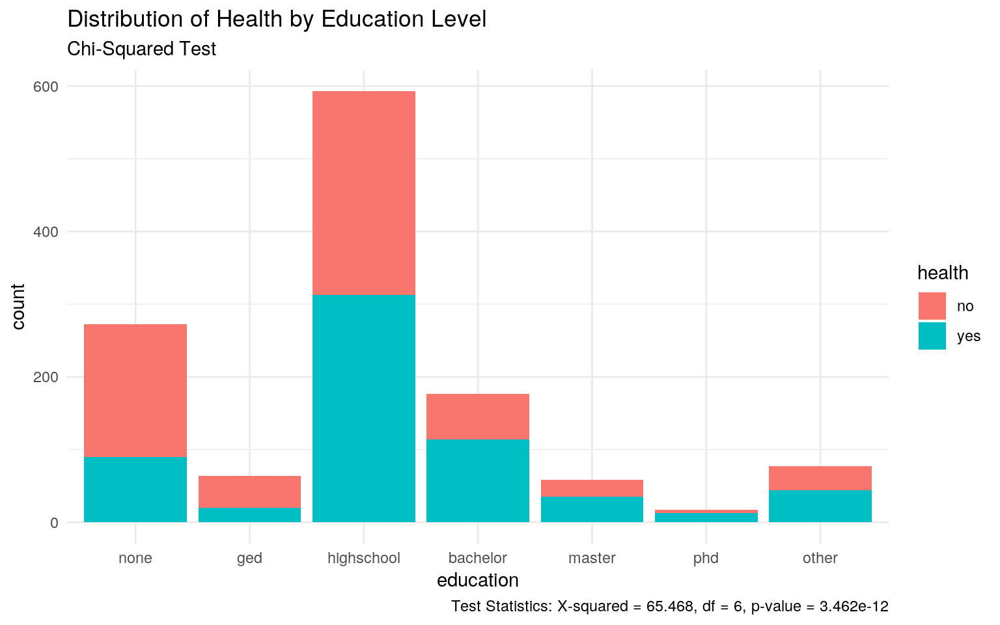
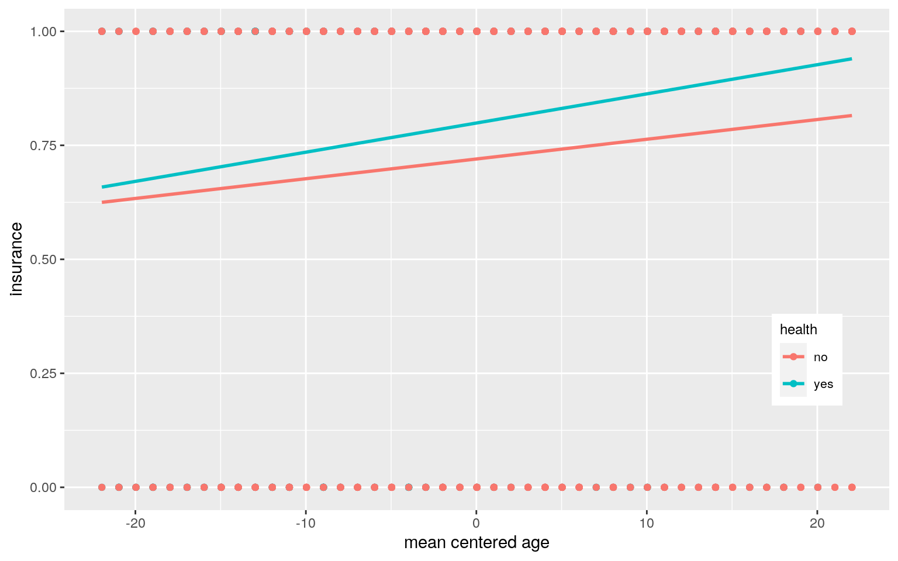
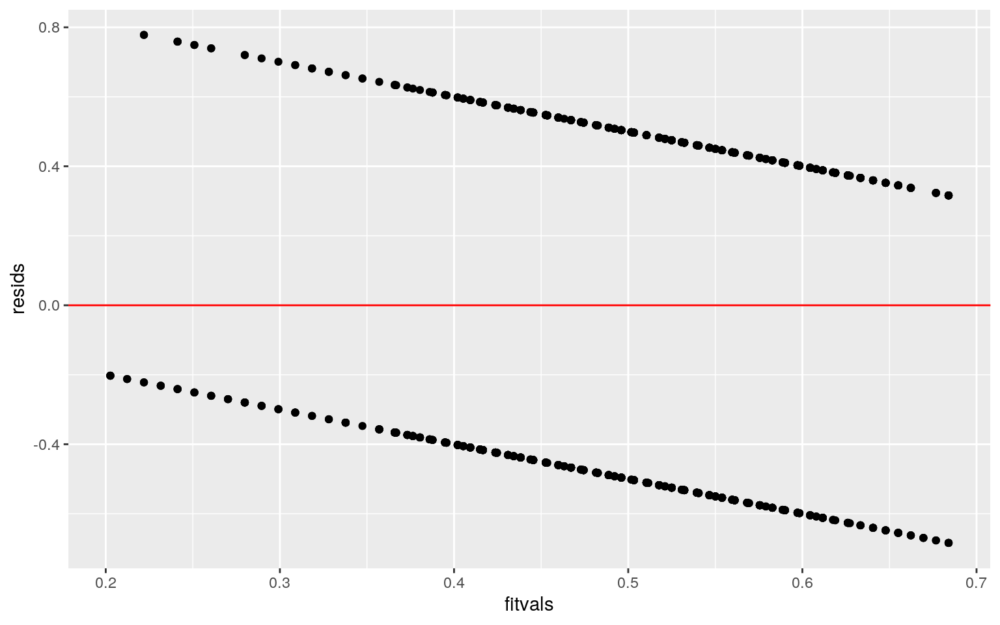
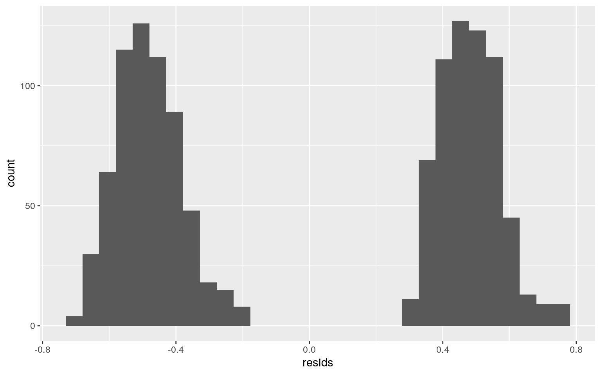
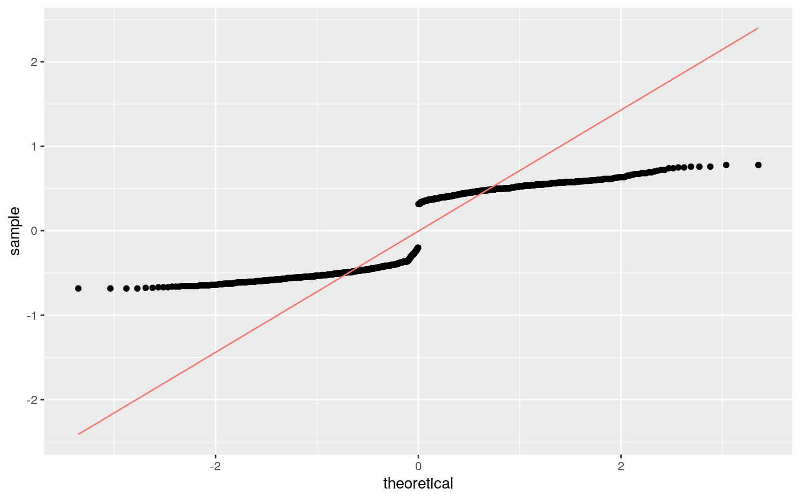
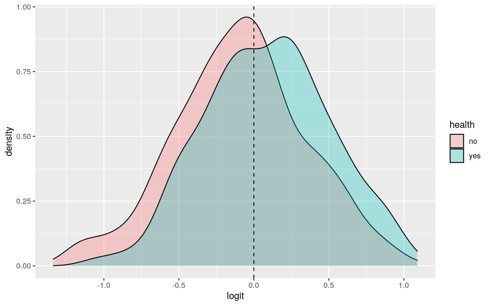
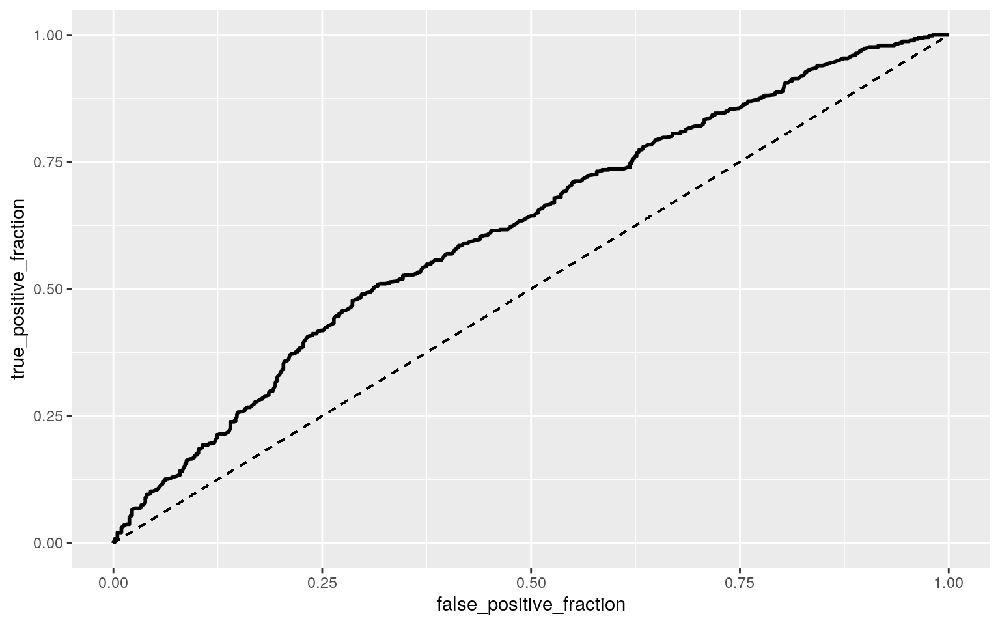

The 'HealthInsurance' dataset including info from the the Medical Expenditure Panel Survey conducted in 1996 was recovered from the AER package. This dataset contains 8,802 observations on 11 variables, but the variables I will be focusing on are: age, gender, education, family, ethnicity, married, insurance, and health. The wrangled dataset was renamed as 'data2' and it contains 1,258 rows (observations) for 8 columns. 'Age' is a numerical variable that describes number of years old a participant is, 'gender' indicates male or female, 'married' describes marital stauts (yes/no), 'insurance' describes whether or not participant has medical insurance (yes/no), 'health' is the self reported identifier on whether the participant believes thay are healthy or not (yes/no), 'family' is a numeric variable which indicates immediate family size, 'ethnicity' indicates whether the participant is: African-American, Caucasian, or other, and 'education' categorically indicates the highest degree obtained by the participant (no degree, GED, high school, bachelor, master, PhD, other.)
set.seed(1234)
data("HealthInsurance")
head(HealthInsurance)## health age limit gender insurance married selfemp family
region ethnicity education
## 1 yes 31 no male yes yes yes 4 south cauc bachelor
## 2 yes 31 no female yes yes no 4 south cauc highschool
## 3 yes 54 no male yes yes no 5 west cauc ged
## 4 yes 27 no male yes no no 5 west cauc highschool
## 5 yes 39 no male yes yes no 5 west cauc none
## 6 yes 32 no female no no no 3 south afam bachelor#wrangling
HealthInsurance %>% select(age, family, gender, education, ethnicity, married, insurance, health) -> data
data%>% group_by(health)%>%filter(health=="no")-> nodata #629 obsvtns
data%>% group_by(health)%>%filter(health=="yes")-> yesdata
sample_n(yesdata, 629)->yesdata #randomly sample 629 observations so that there is equal amount of people who consider themselves healthy as those who do not
#join the two datasets back into one
full_join(yesdata, nodata) -> data2
data2%>% na.omit() ->data2
data2%>% ungroup()-> data2
nrow(data2) #1,258 total rows## [1] 1258ncol(data2) #8 columns## [1] 8data2 %>% distinct(age)%>% count() ## there are more than 10 distinct values for numerical variable 'age'## # A tibble: 1 x 1
## n
## <int>
## 1 45data2 %>% distinct(family)%>% count() #there are more than 10 distinct values for numerical variable 'family'## # A tibble: 1 x 1
## n
## <int>
## 1 11A MANOVA test was performed to find out if mean age (numeric) or family size (numeric) significantly differ by health (categorical). Since the overall MANOVA was significant (pr<0.05), a one-way ANOVA was performed for each variable. Only the univariate ANOVA for age was found to be significant p<0.05 (whether a participant considers themseveles healthy or not is influenced by mean age), and family size did not show a mean difference across 'health' (whether a participant considers themseveles healthy or not is NOT influenced by mean family size). 9 tests total were performed (1 manova + 2 anovas + 8 t-tests). The probability of at least one type 1 error (if unadjusted) is ~0.431. The Boneferroni adjusted signifiance level I should use if I want to keep the overall type 1 error rate at 0.05 is 0.0045. With this adjusted significance, the hypothesis test for age is still significant, while for family it is still insignificant. MANOVA assumes a multivariate normal distribution and that all groups have the same variance/covariance, and it is likely that these restrictive assumptions were not met within the dataset used.
man1 <- manova(cbind(age, family)~health, data=data2)
summary(man1)## Df Pillai approx F num Df den Df Pr(>F)
## health 1 0.028621 18.489 2 1255 1.22e-08 ***
## Residuals 1256
## ---
## Signif. codes: 0 '***' 0.001 '**' 0.01 '*' 0.05 '.' 0.1
' ' 1summary.aov(man1) ##get univariate ANOVAs from MANOVA object## Response age :
## Df Sum Sq Mean Sq F value Pr(>F)
## health 1 4401 4401.1 35.623 3.111e-09 ***
## Residuals 1256 155177 123.5
## ---
## Signif. codes: 0 '***' 0.001 '**' 0.01 '*' 0.05 '.' 0.1
' ' 1
##
## Response family :
## Df Sum Sq Mean Sq F value Pr(>F)
## health 1 0.7 0.71542 0.2677 0.605
## Residuals 1256 3356.9 2.67268data2%>% group_by(health)%>%summarize(mean(age),mean(family))## # A tibble: 2 x 3
## health `mean(age)` `mean(family)`
## <fct> <dbl> <dbl>
## 1 no 41.8 3.19
## 2 yes 38.1 3.15# post hoc t-tests for all 2 ANOVAs
pairwise.t.test(data2$age, data2$health, p.adj = "none")##
## Pairwise comparisons using t tests with pooled SD
##
## data: data2$age and data2$health
##
## no
## yes 3.1e-09
##
## P value adjustment method: nonepairwise.t.test(data2$family, data2$health, p.adj = "none")##
## Pairwise comparisons using t tests with pooled SD
##
## data: data2$family and data2$health
##
## no
## yes 0.6
##
## P value adjustment method: none# 1 manova + 2 anovas + 8 (bc 4x2) t-tests= 11 tests
#At least one type 1 error
1-(1-.05)^11## [1] 0.4311999# or: 1 - ((0.95)^9)
#bonferroni correction
0.05/11## [1] 0.004545455#assumptions
library(rstatix)
group <- data2$health
DVs <- data2%>%select(age,family)
#Test multivariate normality for each group (null: assumption met)
sapply(split(DVs,group), mshapiro_test)## no yes
## statistic 0.9343816 0.9621522
## p.value 5.378256e-16 1.181878e-11#If any p<.05, stop. If not, test homogeneity of covariance matrices
# ^^ (not met but I want to test homogeneity just to verify)
#Box's M test (null: assumption met)
box_m(DVs, group)## # A tibble: 1 x 4
## statistic p.value parameter method
## <dbl> <dbl> <dbl> <chr>
## 1 11.8 0.00821 3 Box's M-test for Homogeneity of
Covariance Matrices#View covariance matrices for each group
lapply(split(DVs,group), cov)## $no
## age family
## age 124.859012 -2.728051
## family -2.728051 3.022830
##
## $yes
## age family
## age 122.237395 -1.243507
## family -1.243507 2.322522A chi-squared randomization test was performed on the dataset between the categorical variables: 'health' and 'education'. The null hypothesis was that whether a person considers themselves healthy or not is independent from their education level (i.e. health and education are independent). The alternative hypothesis was that whether a person considers themselves healthy or not is dependent on their education level (i.e. health and education are not independent). This chi-square test provided evidence that the proportion of participants who believe they are healthy (or not) did significantly differ between the 7 levels of education (X-squared = 65.468, df = 6, p-value = 3.462e-12). Thus, the null hypothesis can be rejected. From the plotted visualization of chi-squared, it appears that most participants who belive they are not healthy have no formal education or only highschool level education.
#randomization test Chi-Squared (categorical vs categorical)
table(data2$health, data2$education) ##
## none ged highschool bachelor master phd other
## no 182 44 280 63 23 4 33
## yes 90 20 313 114 35 13 44chisq.test(table(data2$health, data2$education))##
## Pearson's Chi-squared test
##
## data: table(data2$health, data2$education)
## X-squared = 65.468, df = 6, p-value = 3.462e-12#visualization
ggplot(data2) + aes(x = education, fill = health) + geom_bar() + scale_fill_hue() + theme_minimal()+ labs(title = "Distribution of Health by Education Level", subtitle = "Chi-Squared Test",caption = "Test Statistics: X-squared = 65.468, df = 6, p-value = 3.462e-12")
Interpretting the coefficients: Controlling for age, there is a ~0.110 difference in insurance status between between patients who consider themselves healthy versus those who do not. Controlling for insurance status, there is a ~0.0097 difference in mean-centered ages between patients who consider themselves healthy versus those who do not. Controlling for age, for every 1 unit increase in insurance status, health status increases by 0.002424 on average. There is not a significant interaction between insurance status and age.
The significance of the results did not change even after comparison with robust SEs. This makes sense since there was very little difference between original SE and the robust SE values. The p-value for insurance decreased from original to robust SEs due to an increase in t-value. For mean centred age, the t-value increased and as a result the p-value decreased slightly from original to robust SE. When SEs decreases, t value increases, and p value decreases. According to the adjusted R-squared value of 0.03398, my model explains 3.4% of the variation in the outcome (not a very good model).The assumptions for linearity, normality, and homoskedasticity were not met.
#Mean centering and dummy coding variables
data3 <- data2%>% mutate(health_=ifelse(health=="yes", 1, 0))
data3 <- data3%>% mutate(insurance=ifelse(insurance=="yes", 1, 0))
data3 <- data3%>% mutate(gender=ifelse(gender=="female", 1, 0))
data3 <- data3%>% mutate(married=ifelse(married=="yes", 1, 0))
data3 <- data3%>% mutate(age_c=age-mean(age, na.rm=T))
data3 <- data3%>% mutate(family_c=family-mean(family, na.rm=T))
head(data3)## # A tibble: 6 x 11
## age family gender education ethnicity married insurance
health health_ age_c family_c
## <dbl> <dbl> <dbl> <fct> <fct> <dbl> <dbl> <fct> <dbl>
<dbl> <dbl>
## 1 40 3 1 highschool cauc 0 1 yes 1 0.0326 -0.170
## 2 28 4 0 none cauc 1 1 yes 1 -12.0 0.830
## 3 40 5 0 highschool cauc 1 1 yes 1 0.0326 1.83
## 4 20 6 1 none cauc 0 0 yes 1 -20.0 2.83
## 5 19 5 1 highschool cauc 0 1 yes 1 -21.0 1.83
## 6 46 2 1 master cauc 1 1 yes 1 6.03 -1.17#Linear regression model with interactions
linfit <- lm(health_~insurance*age_c, data = data3)
#coef estimates
summary(linfit)##
## Call:
## lm(formula = health_ ~ insurance * age_c, data = data3)
##
## Residuals:
## Min 1Q Median 3Q Max
## -0.68394 -0.48881 0.05671 0.47889 0.77807
##
## Coefficients:
## Estimate Std. Error t value Pr(>|t|)
## (Intercept) 0.415263 0.028777 14.430 < 2e-16 ***
## insurance 0.109921 0.032910 3.340 0.000862 ***
## age_c -0.009651 0.002393 -4.033 5.85e-05 ***
## insurance:age_c 0.002424 0.002798 0.866 0.386586
## ---
## Signif. codes: 0 '***' 0.001 '**' 0.01 '*' 0.05 '.' 0.1
' ' 1
##
## Residual standard error: 0.4916 on 1254 degrees of
freedom
## Multiple R-squared: 0.03628, Adjusted R-squared: 0.03398
## F-statistic: 15.74 on 3 and 1254 DF, p-value: 4.744e-10#plot the regression
ggplot(data3, aes(x=age_c, y=insurance,group=health))+geom_point(aes(color=health))+geom_smooth(method="lm",se=F,fullrange=T,aes(color=health))+ theme(legend.position=c(.9,.3), legend.title= element_text(size=9),legend.text = element_text(size=8))+xlab("mean centered age")
# H0 = the predictors of insurance and age do not explain any variation in health (true slope would be zero)
# Ha= the predictors of insurance and age do explain any variation in health (true slope is NOT zero) #Checking assumptions of linearity and homoskedasticity
resids<-linfit$residuals
fitvals<-linfit$fitted.values
ggplot()+geom_point(aes(fitvals,resids))+geom_hline(yintercept=0, color='red')
bptest(linfit) #H0: homoskedastic##
## studentized Breusch-Pagan test
##
## data: linfit
## BP = 10.084, df = 3, p-value = 0.01787#^^ not homoskedastic!
#normality assumption test
ggplot()+geom_histogram(aes(resids), bins=30)
ggplot()+geom_qq(aes(sample=resids))+geom_qq_line(aes(sample=resids, color='red')) + theme(legend.position = "none")
ks.test(resids, "pnorm", sd=sd(resids))##
## One-sample Kolmogorov-Smirnov test
##
## data: resids
## D = 0.24547, p-value < 2.2e-16
## alternative hypothesis: two-sided#Normal-theory standard errors
coeftest(linfit)##
## t test of coefficients:
##
## Estimate Std. Error t value Pr(>|t|)
## (Intercept) 0.4152627 0.0287769 14.4304 < 2.2e-16 ***
## insurance 0.1099211 0.0329101 3.3400 0.0008623 ***
## age_c -0.0096508 0.0023932 -4.0326 5.849e-05 ***
## insurance:age_c 0.0024238 0.0027985 0.8661 0.3865859
## ---
## Signif. codes: 0 '***' 0.001 '**' 0.01 '*' 0.05 '.' 0.1
' ' 1#Robust standard errors
coeftest(linfit, vcov = vcovHC(linfit))##
## t test of coefficients:
##
## Estimate Std. Error t value Pr(>|t|)
## (Intercept) 0.4152627 0.0280984 14.7789 < 2.2e-16 ***
## insurance 0.1099211 0.0323558 3.3973 0.000702 ***
## age_c -0.0096508 0.0023023 -4.1918 2.962e-05 ***
## insurance:age_c 0.0024238 0.0027091 0.8947 0.371117
## ---
## Signif. codes: 0 '***' 0.001 '**' 0.01 '*' 0.05 '.' 0.1
' ' 1#Regression without interactions
linfit2 <- lm(health_~insurance+gender+age_c, data = data3)
summary(linfit2)##
## Call:
## lm(formula = health_ ~ insurance + gender + age_c, data
= data3)
##
## Residuals:
## Min 1Q Median 3Q Max
## -0.74088 -0.48005 0.03139 0.47396 0.77205
##
## Coefficients:
## Estimate Std. Error t value Pr(>|t|)
## (Intercept) 0.454685 0.030487 14.914 < 2e-16 ***
## insurance 0.112569 0.032562 3.457 0.000564 ***
## gender -0.084207 0.027726 -3.037 0.002438 **
## age_c -0.007904 0.001236 -6.393 2.29e-10 ***
## ---
## Signif. codes: 0 '***' 0.001 '**' 0.01 '*' 0.05 '.' 0.1
' ' 1
##
## Residual standard error: 0.49 on 1254 degrees of freedom
## Multiple R-squared: 0.04275, Adjusted R-squared: 0.04046
## F-statistic: 18.67 on 3 and 1254 DF, p-value: 7.543e-12#likelihood ratio test
lrtest(linfit, linfit2)## Likelihood ratio test
##
## Model 1: health_ ~ insurance * age_c
## Model 2: health_ ~ insurance + gender + age_c
## #Df LogLik Df Chisq Pr(>Chisq)
## 1 5 -889.80
## 2 5 -885.56 0 8.4674 < 2.2e-16 ***
## ---
## Signif. codes: 0 '***' 0.001 '**' 0.01 '*' 0.05 '.' 0.1
' ' 1To bootstrap SEs, I randomly sampled rows from the dataset with replacement.As SE increases, the t-value decreases and the p-value increases (and vice versa). The bootstrapped SE for the intercept is less than both the original and robust SE values which means that the t-value for it is greater and as a result the p-value is smaller for the intercept. The bootstrapped SEs for insurance are greater than the original SEs and the robust SEs. The bootstrapped SEs for age_c and insurance:age_c are greater than the robust SEs but less than the original SEs. Compared to the robust SEs’ t and p values, the bootstrapped t values will be greater and the p values will be lesser.
#Bootstrapped standard errors
samp_distn<-replicate(5000, {
boot_dat<-boot_dat<-data3[sample(nrow(data3),replace=TRUE),]
bootfit<-lm(health_~insurance*age_c, data = boot_dat)
coef(bootfit)
})
## Estimated SEs
samp_distn%>%t%>%as.data.frame%>%summarize_all(sd)## (Intercept) insurance age_c insurance:age_c
## 1 0.02783145 0.03224429 0.002327722 0.002732122I fit a logistic regression model predicting the binary variable 'health' from insurance, family, age, and gender. The predicted odds of believing that you are healthy when you are a male with no health insurance and when mean centered age and family are 0 = 0.833. When holding family_c, age_c, and gender constant, having insurance multiplies the predicted odds of considering yourself to be healthy by a factor of 1.60. When holding insurance, age_c, and gender constant, increasing mean centered family size by 1 multiplies the predicted odds of considering yourself to be healthy by a factor of 0.96. When holding insurance, family_c, and gender constant, increasing mean centered age by 1 multiplies the predicted odds of considering yourself to be healthy by a factor of 0.97. When holding family_c, age_c, and insurance constant, being female multiplies the predicted odds of considering yourself to be healthy by a factor of 0.69.
According to the calculated accuracy, this model correctly predicts 58.3% of the outcomes in the data overall. The model correctly predicts 57.4% of cases as positive (health=yes) out of the total number of positives (sensitivity). The model correctly predicts 59.3% of cases as negative (health=no) out of the total number of negatives (specificity). In regards to precision in this model, 58.5% of the predicted as positive cases are true positives (people predicited as healthy who actually consider themselves healthy).
The AUC (0.617) indicates that the model is a poor predictor of new data (and poor at distinguishing between whether a participant considers themselves healthy or not). The ROC curve is not very good (if it could predict perfectly, TPR would be 1 while FPR would be 0 for any cutoff except 100%) but it isn’t a straight line either. This indicates that it is possible to distinguish between positive and negatives cases, just poorly and with low accuracy. The AUC of the model was found to be 0.617 and the calculated AUC was also found to be 0.617 (both were equivalent)
#Logistic regression
logfit<-glm(health_~insurance+family_c+age_c+gender, data=data3, family="binomial")
coeftest(logfit)##
## z test of coefficients:
##
## Estimate Std. Error z value Pr(>|z|)
## (Intercept) -0.1822414 0.1280227 -1.4235 0.154589
## insurance 0.4684662 0.1377038 3.4020 0.000669 ***
## family_c -0.0459381 0.0357484 -1.2850 0.198778
## age_c -0.0335688 0.0053054 -6.3273 2.495e-10 ***
## gender -0.3647908 0.1164450 -3.1327 0.001732 **
## ---
## Signif. codes: 0 '***' 0.001 '**' 0.01 '*' 0.05 '.' 0.1
' ' 1#Since you always exponentiate coefficients before interpretation
exp(coef(logfit))%>%data.frame()## .
## (Intercept) 0.8334001
## insurance 1.5975420
## family_c 0.9551011
## age_c 0.9669883
## gender 0.6943419#confusion matrix
prob <- predict(logfit, type="response")
pred<-ifelse(prob>.5,1,0)
table(prediction=pred, truth=data3$health_)%>%addmargins## truth
## prediction 0 1 Sum
## 0 373 268 641
## 1 256 361 617
## Sum 629 629 1258#accuracy
(373+361)/1258 #0.5834658## [1] 0.5834658#sensitivity (TPR)
361/629 # 0.5739269 ## [1] 0.5739269#specificity (TNR)
373/629 # 0.5930048## [1] 0.5930048#Recall/Precision (PPV)
361/617 #0.5850891## [1] 0.5850891#AUC by hand
class_diag(prob,data3$health_) #auc=0.6166815## acc sens spec ppv f1 auc
## 1 0.5834658 0.5739269 0.5930048 0.5850891 0.5794543
0.6166815#Density of log-odds plot
data4 <- data3
data4$logit <- predict(logfit)
ggplot(data4, aes(logit, fill=health)) + geom_density(alpha=0.3) + geom_vline(xintercept=0, lty=2)
#ROC curve and AUC
data5 <- data3%>%mutate(probability=predict(logfit, type = "response"), prediction=ifelse(prob>.5,1,0))
classify<-data5%>%transmute(probability,prediction,truth=health)
ROCplot<-ggplot(classify)+geom_roc(aes(d=truth,m=probability), n.cuts=0) + geom_segment(aes(x=0,y=0,xend=1,yend=1),lty=2)
ROCplot
#auc
calc_auc(ROCplot) #same as in-sample auc metric## PANEL group AUC
## 1 1 -1 0.6166815A logistic regression predicting the binary variable 'health' was performed from all of the other explanatory variables. After fitting the model, it was found that this model correctly predicts 61.4% of the outcomes in the data overall. The model correctly predicts 63.8% of cases as positive (health=yes) out of the total number of positives (sensitivity). The model correctly predicts 59.0% of cases as negative (health=no) out of the total number of negatives (specificity). In regards to precision in this model, 60.8% of the predicted as positive cases are true positives (people predicited as healthy who actually consider themselves healthy). AUC was found to be 0.672 which means that this model is a poor predictor of new data (and poor at distinguishing between whether a participant considers themselves healthy or not).
After performing the 10-fold CV using all the variables, the out-of sample classification diagnostics of accuracy, sensitivity, specificity and precision were found to be 0.599, 0.625, 0.576, and 0.598 respectively. The AUC was found to be 0.657 which is slightly less than the in-sample AUC metric of 0.672. Because the change is so slight, the model is still a poor predictor of new data (and poor at distinguishing between whether a participant considers themselves healthy or not). All out-of-sample diagnostic metrics were less than in-sample ones.
After performing the 10-fold CV using only the variables that lasso retained (age_c, gender, bachelor_, none_, phd_, ged_, and afam_), the accuracy, sensitivity, specificity and precision were found to be 0.606, 0.493, 0.720, and 0.643 respectively. The AUC was found to be 0.659 which is slightly better than the AUC from the 10-fold CV using all variables (0.657) but still less than in-sample logistic regression of all variables (AUC=0.672). However, after performing the 10-fold CV using only the variables that lasso selected, the AUC(0.659) was better than the original logistic regression from Q5 with variables insurance, family, age, and gender (AUC=0.617). Throughout the entire project, the AUC indicated no change from "poor" predictor which means that all models are poor predictors of new data (and poor at distinguishing between whether a participant considers themselves healthy or not).
#dummy code ethnicity and education
head(data3)## # A tibble: 6 x 11
## age family gender education ethnicity married insurance
health health_ age_c family_c
## <dbl> <dbl> <dbl> <fct> <fct> <dbl> <dbl> <fct> <dbl>
<dbl> <dbl>
## 1 40 3 1 highschool cauc 0 1 yes 1 0.0326 -0.170
## 2 28 4 0 none cauc 1 1 yes 1 -12.0 0.830
## 3 40 5 0 highschool cauc 1 1 yes 1 0.0326 1.83
## 4 20 6 1 none cauc 0 0 yes 1 -20.0 2.83
## 5 19 5 1 highschool cauc 0 1 yes 1 -21.0 1.83
## 6 46 2 1 master cauc 1 1 yes 1 6.03 -1.17data3 <- data3%>% mutate(cauc_=ifelse(ethnicity=="cauc", 1, 0))
data3 <- data3%>% mutate(afam_=ifelse(ethnicity=="afam", 1, 0))
data3 <- data3%>% mutate(other_=ifelse(ethnicity=="other", 1, 0))
data3 <- data3%>% mutate(bachelor_=ifelse(education=="bachelor", 1, 0))
data3 <- data3%>% mutate(none_=ifelse(education=="none", 1, 0))
data3 <- data3%>% mutate(highschool_=ifelse(education=="highschool", 1, 0))
data3 <- data3%>% mutate(phd_=ifelse(education=="phd", 1, 0))
data3 <- data3%>% mutate(master_=ifelse(education=="master", 1, 0))
data3 <- data3%>% mutate(otheredu_=ifelse(education=="other", 1, 0))
data3 <- data3%>% mutate(ged_=ifelse(education=="ged", 1, 0))#Logistic regression
logfit2<-glm(health_~age_c+family_c+gender+bachelor_+none_+highschool_+ phd_+master_+otheredu_+ged_+cauc_+afam_+ other_+ married+ insurance, data=data3, family="binomial")
coeftest(logfit2)##
## z test of coefficients:
##
## Estimate Std. Error z value Pr(>|z|)
## (Intercept) -0.9621095 0.4008151 -2.4004 0.0163780 *
## age_c -0.0354323 0.0058298 -6.0778 1.218e-09 ***
## family_c -0.0391879 0.0401048 -0.9771 0.3285012
## gender -0.3908337 0.1205456 -3.2422 0.0011861 **
## bachelor_ 1.3743852 0.3199586 4.2955 1.743e-05 ***
## none_ 0.1174922 0.3076611 0.3819 0.7025442
## highschool_ 0.9124060 0.2889354 3.1578 0.0015895 **
## phd_ 2.0356055 0.6445747 3.1581 0.0015882 **
## master_ 1.2975312 0.3901305 3.3259 0.0008814 ***
## otheredu_ 1.0970982 0.3627810 3.0241 0.0024935 **
## ged_ NA NA NA NA
## cauc_ 0.1390869 0.2638768 0.5271 0.5981310
## afam_ -0.2814660 0.3091148 -0.9106 0.3625299
## other_ NA NA NA NA
## married 0.2265130 0.1422828 1.5920 0.1113866
## insurance 0.1494854 0.1484321 1.0071 0.3138884
## ---
## Signif. codes: 0 '***' 0.001 '**' 0.01 '*' 0.05 '.' 0.1
' ' 1#Since you always exponentiate coefficients before interpretation
exp(coef(logfit2))%>%data.frame()## .
## (Intercept) 0.3820860
## age_c 0.9651881
## family_c 0.9615700
## gender 0.6764927
## bachelor_ 3.9526460
## none_ 1.1246729
## highschool_ 2.4903070
## phd_ 7.6568871
## master_ 3.6602491
## otheredu_ 2.9954612
## ged_ NA
## cauc_ 1.1492239
## afam_ 0.7546766
## other_ NA
## married 1.2542189
## insurance 1.1612366#confusion matrix
prob2 <- predict(logfit2, type="response")
pred2<-ifelse(prob2>.5,1,0)
table(prediction=pred2, truth=data3$health_)%>%addmargins## truth
## prediction 0 1 Sum
## 0 371 228 599
## 1 258 401 659
## Sum 629 629 1258#accuracy
(371+401)/1258 #0.6136725## [1] 0.6136725#sensitivity (TPR)
401/629 # 0.6375199## [1] 0.6375199#specificity (TNR)
371/629 # 0.5898251 ## [1] 0.5898251#Recall/Precision (PPV)
401/659 # 0.6084977## [1] 0.6084977#AUC by hand
class_diag(prob2,data3$health_) #auc=0.6722496## acc sens spec ppv f1 auc
## 1 0.6136725 0.6375199 0.5898251 0.6084977 0.6226708
0.6722496#10-fold CV with the same model
set.seed(1234)
k=10 #choose number of folds
data7<-data3[sample(nrow(data3)),] #randomly order rows
folds<-cut(seq(1:nrow(data3)),breaks=k,labels=F) #create folds
diags2<-NULL
for(i in 1:k){
## Create training and test sets
train2<-data7[folds!=i,]
test2<-data7[folds==i,]
truth2<-test2$health_ ## Truth labels for fold i
## Train model on training set (all but fold i)
train_fit2<- glm(health_ ~ age_c+family_c+gender+ bachelor_ +none_+highschool_+ phd_+master_+otheredu_+ged_+cauc_+afam_+ other_+ married+ insurance, data=train2, family="binomial")
## Test model on test set (fold i)
probs2<-predict(train_fit2,newdata = test2,type="response")
## Get diagnostics for fold i
diags2<-rbind(diags2,class_diag(probs2,truth2))
}
#report average out-of-sample classification diagnostics
diags2%>%summarize_all(mean)## acc sens spec ppv f1 auc
## 1 0.5994286 0.6250035 0.5763394 0.5979476 0.6087314
0.6566633#Perform LASSO on the same model/variables
lasfit <- glm(health_ ~ -1 + age_c+family_c+gender+ bachelor_ +none_+highschool_+ phd_+master_+otheredu_+ged_+cauc_+afam_+ other_+ married+ insurance, data=data3, family="binomial")
y<-as.matrix(data3$health_)
x<-model.matrix(lasfit)
x<-scale(x)
cv<-cv.glmnet(x,y, family='binomial')
lasso<-glmnet(x,y,family="binomial",lambda=cv$lambda.1se)
#coef(cv)
coef(lasso)## 16 x 1 sparse Matrix of class "dgCMatrix"
## s0
## (Intercept) -0.002297175
## age_c -0.218239717
## family_c .
## gender -0.069127136
## bachelor_ 0.063756278
## none_ -0.249414327
## highschool_ .
## phd_ 0.011507647
## master_ .
## otheredu_ .
## ged_ -0.093924698
## cauc_ .
## afam_ -0.055980478
## other_ .
## married .
## insurance .#cross-validate lasso
set.seed(1234)
k=10
data6 <- data3 %>% sample_frac #put rows of dataset in random order
folds3 <- ntile(1:nrow(data3),n=10) #create fold labels
diags3<-NULL
for(i in 1:k){
train3 <- data6[folds!=i,] #create training set (all but fold i)
test3 <- data6[folds==i,] #create test set (just fold i)
truth3 <- test3$health_ #save truth labels from fold i
fit3 <- glm(health_ ~ -1 + age_c+gender+ bachelor_ +none_+ phd_+ged_+afam_, data=train3, family="binomial")
probs3 <- predict(fit3, newdata=test3, type="response")
diags3<-rbind(diags3,class_diag(probs3,truth3))
}
diags3%>%summarize_all(mean) #auc improved a little from out-of sample CV with varaibles not selected by lasso## acc sens spec ppv f1 auc
## 1 0.6057206 0.4934976 0.7195788 0.643313 0.5556541
0.6587442